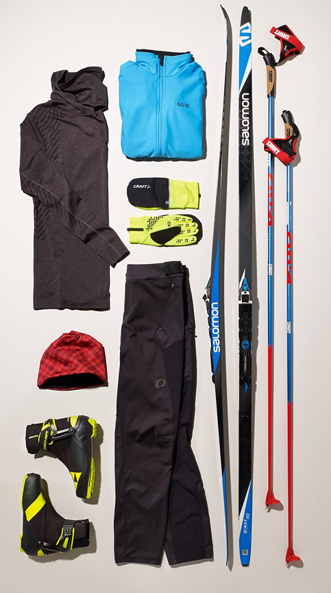

Distanču slēpošana
Distanču slēpošana ir slēpošanas veids, kurā cilvēks pārvietojas ar slēpēm pa līdzenām vai viegli
paugurainām trasēm, izmantojot roku un kāju kustības.
Distanču slēpošanā slēpotājs pats virzās uz priekšu, atspiežoties ar slēpēm un nūjām.
Tā attīsta izturību, spēku un koordināciju, un to var darīt gan sporta sacensībās, gan atpūtai dabā.
Trases distanču slēpošanai Latvijā:
- Biķernieku trase
- Uzvaras parka slēpošanas trase
- Milzkalna teritorijā
- Reiņa trase
- Purvciema trase
Distanču slēpošanas inventārs
- Speciālas, garas, distanču slēpošanas slēpes
- Nūjas
- Specieāli apavi priekš distanču slēpošanas slēpēm
- Silts apģērbs
